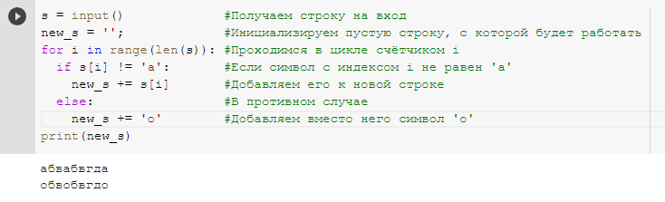
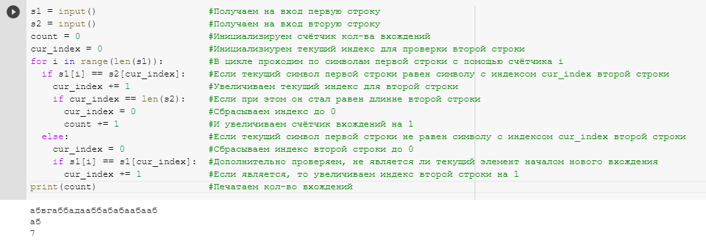
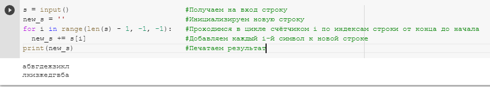
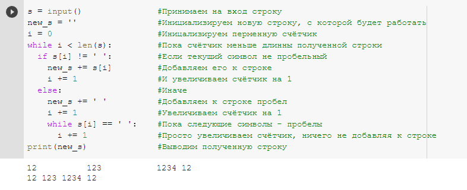

Понятие алгоритма
Понятие алгоритмаАлгоритмы обработки строковой информации
Сразу стоит отметить, что в Python существует огромное количество встроенных функция для обработки строк. Однако, чтобы дети научились не только использовать готовые алгоритмы, но и писать свои, а также понимали как устроены уже реализованные встроенные функции, в данном уроке практически не будут использоваться встроенные возможности языка Python для обработки строк.
Единственное, на что стоит обратить внимание - что в Python каждый символ строки имеет свой индекс (индексация начинается с 0) по которому этот символ можно извлечь из строки используя квадратные скобки. Получить же кол-во всех символов в строке (её длинну) можно с помощью функции len.
Во многих других языках программирования существует символьный тип данных - char, но в Python - любая строка, даже состоящая всего из одного символа имеет тип string. Ограничения на длинну строки практически не существует и при работе со строками единственным существенным ограничением является физический объем оперативной памяти.
Также, в отличие от некоторых других языков программирования, в Python не важно, какие кавычки использовать для строк - одинарные или двойные.
Для двух строк определена операция сложения (конкатенации), также определена операция умножения строки на число.
Очень важной особенностью в Python является то, что строки - неизменяемые объекты. То есть нельзя взять строку и заменить её 3 символ на другой. Возможно только создать новую строку, у которой все символы, кроме 3 будут равны символов первоначальной строки.
Перейдём к рассмотрения простейших задач, касающихся работы со строками.
Задачи для объяснения
Первой задача для объяснения: получить на вход строку и проверить, есть ли в этой строке русская буква 'а'. Если да, заменить все буквы 'а' на 'о' и вывести полученный результат на экран.
Сначла нам необходимо считать строку, с помощью функции input(). Затем, в силу особенностей работы со строками в Python, нам необходимо инициализировать пустую строку, с которой мы будет работать далее. После этого, нам достаточно пройти в цикле по полученной строке, если текущей символ не равен 'а', то мы просто добавим его к созданной нами строке, в противном случае, вместо него добавим 'о'. Вот как это будет выглядить на Python:
Второй задачей для объяснения материала будет задача поиска кол-ва вхождений одной строки в другую. На вход поступает 2 строки, нам необходимо определить, содержится ли вторая строка в первой и напечатать кол-во вхождений.
Для решения данной задачи нам нужно в цикле проходиться по элементам первой строки и сравнивать с элементами второй строки, при этом, нам необходимо запоминать текущей индекс второй строки, если элементы равны, в противном случае каждый раз сбрасывать этот индекс до 0. Если мы сбросили индекс до 0, нам необходимо снова проверить элементы на равенста с учётом изменения индекс подстроки, так как текущий элемент первой строки может быть не равен элементу с изначальным текущем индексом второй строки, но может являтся началом нового вхождения, то есть быть равным элементу второй строки с нулевым индексом. Если значение текущего индекса стало равно длинне второй строки, то нам необходимо сброить индекс до 0 и увеличить счётчик совпадений на 1.
Пример решения данной задачи с пояснениями представлен на рисунке ниже:
Задачи для самостоятельного решения
Первая задача для самостоятельного решения:
На вход падаётся строка, необходимо её перевернуть, а результат распечатать.
Существует множество способов решить данную задачу, например,использовать цикл for с убывающей арифметической последовательностью:
Вторая задача для самостоятельного решения:
На вход подаётся строка, в которой необходимо заменить все подстроки из нескольких подряд идущих пробелов на один пробел и вывести результат на экран. Гарантируется, что строка заканчивается не пробельным символом.
Решение: в данной задаче удобно будет использовать цикл while. Для этого, создаём переменную счётчик i и пока счётчик меньше длинны строки проверяем: если текущий символ не пробельный - добавляем его к результирующей строке и увеличиваем счётчик на 1, в противном случае: добавляем пробел к результирующей строке и увеличиваем счётчик на 1. Затем, используем вложенный цикл while с условием: пока текущей элемент равен пробелу - просто увеличиваем счётчик.
Разработанный алгоритм на языке Python представлен ниже:
